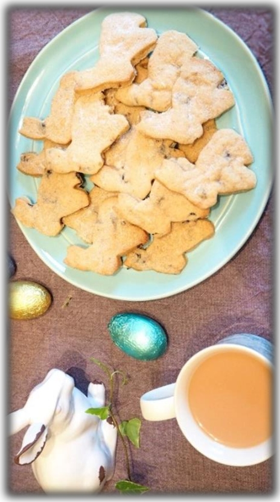

Easter recipe
Here is an idea for some lovely tasty and sweet Easter biscuits (please note: this is not necessarily a very healthy option!)
Before you start, it is important to remember to wash your hands and clean your kitchen work tops.
Easter Biscuits
Ingredients
- 285g (10 ounces) of plain flour
- 115g (4 oz) of caster sugar
- 1 teaspoon of nutmeg
- 225g (8 oz) of unsalted butter
- 55g (2 oz) of currants
- 1 teaspoon of cinnamon
Method
- Preheat your oven to 200 C / Gas 6, and meanwhile lightly grease two baking trays, or line with parchment.
- Sift flour, baking powder and salt together; set aside.
- In a large bowl, cream together the butter and sugar until light and fluffy. Beat in the eggs one at a time, then stir in the vanilla. Gradually blend in the sifted flour until evenly mixed. Cover dough and refrigerate for 2 hours.
- On a floured surface, roll out portions of dough to 5mm thickness. Cut out a tree shape using a knife or use a variety of Christmas biscuit cutters. If you are going to hang some of your biscuits on your Christmas tree, make sure you cut a small hole in them before they go in the oven!
- Bake for 6 to 8 minutes in a preheated oven (at 200C / Gas 6), or until the edges are golden brown. Transfer from baking tray to wire cooling racks. Decorate with icing when completely cool.
